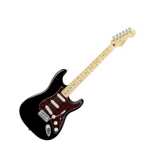
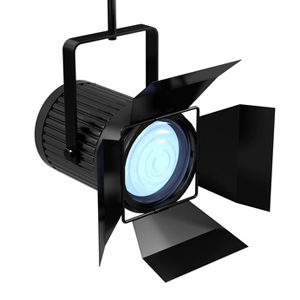

What We Use

Instruments
- Guitars:
- Fender Custom Telecaster
- Fender Deluxe Stratocaster
- Marshall amp
- Bass:
- Musicman Stingray 5
- Markbass amp
- Drums:
- Keys:
- Mics:

Extras
- P.A Speakers:
- 4 x Nexo PS15
- 4 x Ligwa 18" Scoop Bins
- Powersoft K10
- Crown Macro Tech VZ3600
- Stage Lighting:
- 4 x iColour Floods
- 8 x iMove 7 Moving Heads
- 4 x Up Lighters
- 4 x American DJ Pars